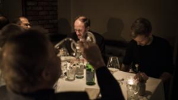
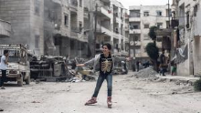

Annonce
Abonnementlæsetid: 7 min.
Nogle EU-lande frygter, at Rusland kan bruge Nord Stream 2 som politisk våben mod Europa. Men i virkeligheden er det omvendt, mener firmaerne bag rørledningen: Det er EU, der bruger gassen som våben over for Putin. Information har været på charmetur med den russiske gas' europæsiske venner
Rusland vil ikke bruge gasrørledningen, Nord Stream 2 som politisk våben, lyder det fra folkene bag projektet Rørledningen koster 70 mia, kr og vil semde 55 mia. kibikmeter gas ind i Europa om året.
Peter Nygard Christensen
Udland
Jakob Stein
7. maj 2018
kommentarer (2)
del
del
del
Fik du læst?
Alternativ forbrødring, eller hvordan jeg lærte at holde op med at bekymre mig og elske jazzhænder
Jeg måtte ud på det dybe vand for at nå til et nyt land
Iceage lever stadig op til den hype, de opnåede, inden de var gamle nok til at flytte hjemmefra
Under normale forhold ville Trumps skandalerame miljøchef forlængst være blevet bortvist...
Seneste nyt
slut med møntbetaling i købehanvske p-automater
Energiminister: Afgift på biomasse er forkert vej at gå
Libaneisk premierministers parti går en tedjedel tilbage
Ombudsmand: Offentligheden må se kronprinsens IOC-breve
WWF: Vildsvinshegn skader andre dyrearter i grænselandet
Atomaftale med Iran fortsætter også uden USA
Flere nyheder
Forsiden lige nu
Abonnement
Gas er et godt politisk våben. Det er bare ikke Putin, der bruger det
Mand dig op, Kvinde!
Peter Madsen anker kun længden af sin straf
Ankesagen mod Peter Madsen kommer kun til at handle om, hvilken straf han skal have
abonnement
Rapport fra norsk regeringskommision skaver tvivl om lovligheden af FE's masseovervågning
abonnement
Sådan håndteres offentlige arbejdskonflikter i Sverige og Norge
Den ellers højtbesungne danske model skal revideres, hvis det står til socialdemokratiestes formand, Mette Frederiksen. Information skitserer i den anledning overenskomstmodellerne hos vores nordiske søsternationer. Men måske behøver vi slet ikke se ud over landes grænser for at finde inspiration til justeringer
abonnement
440.000 Syrere er vendt tilbage, selov om krigen fortsætter. vi har fulgt en af dem
Anbefalinger
kommentarer
Anbefal artikel
Henrik holm hansen
07. maj 2018 - 05:56
Hvis det forholder sig som skrevet stpr at Rusland for mest ud nord stream 2 forstår jeg slet ikke politikerne og måske specielt EU ikke bruger muligheden aktivt til presse endsige fortælle PUTIN at ruslands opførsel i ukraine ikke kan accepteres kommer der ikke penge i kassen kan oligarkerne ikke fordres!
Abbefal kommentar
Gert Romme
07. maj 2018 - 17:08
Jeg skal ikke vurdere, hvem der eventuelt kan finde på at benytte dette våben, der er lammende for civilsamfundet.
Men Rusland har faktisk brugt dette "våben" mere end en gang. og de vestlige lande med Fordbundsrepublikken i spidsen er blevet ramt mindst 2 gange.
Og hver gang har rusland beklaget og undskyldt sig med, at man ikke kunne ramme Poland (1 gang) og Ukraine (mindst 1 gang), uden at det påvirkede andre aftagelande. og mindst en gang mente Rusland, at de vestlige aftagerlande burde straffe??? - Ukraina.
I øvrigt så jeg i eftermidags tidligere SPD-medlem, tidligere Furbudskanzler og tidligere Gerhard Schröder sidde på de finde plader under Vladimir Putins indsættelses-show. Det var på RT (Russia Today), der er Vladimir Putins personlige progaganda-kanal der også sikrer "det frie ord" i verden. Det så ud til det var meget vigtigt for Putin og RT, for der var hele tiden fokus på en tidligere Hr. Schröder.
Anbefal kommentar
Du skal være registeret bruger for at komentere. Log ind eller opret bruger